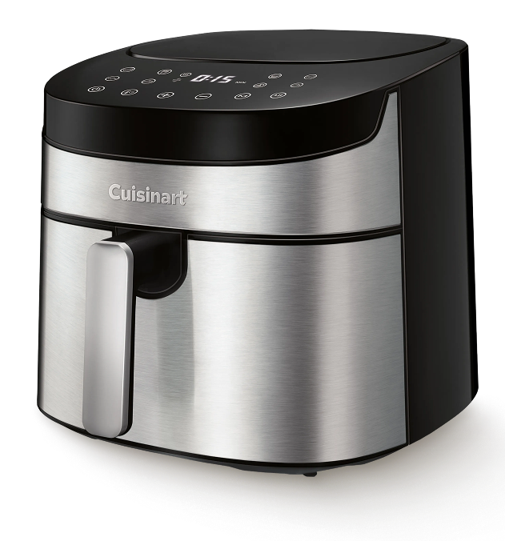
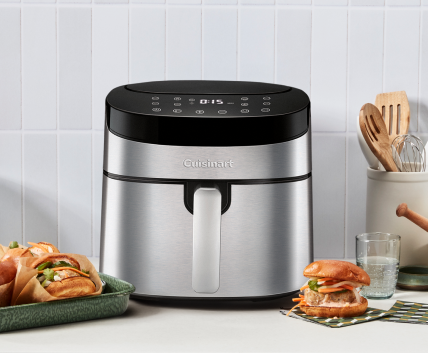
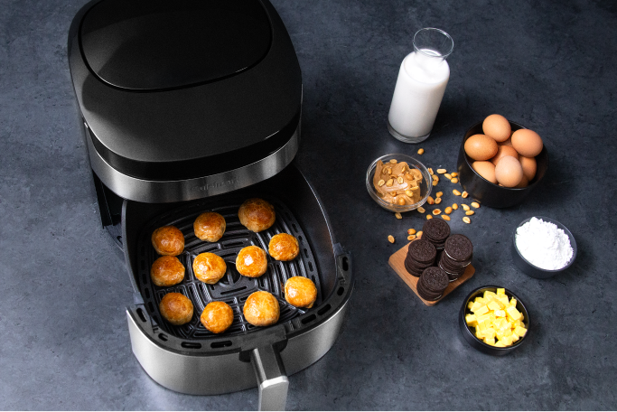
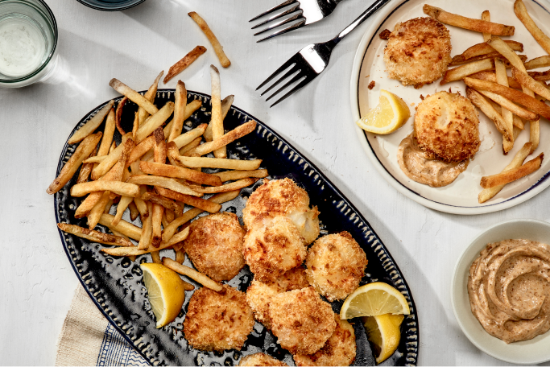
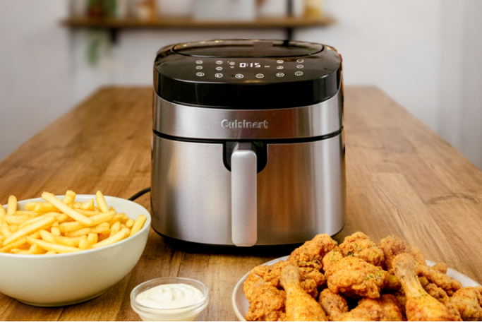
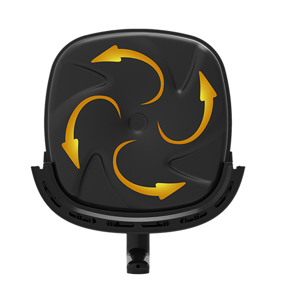
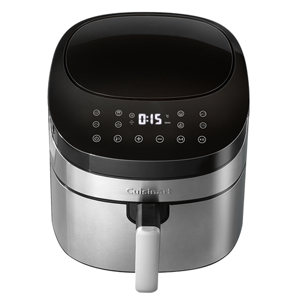
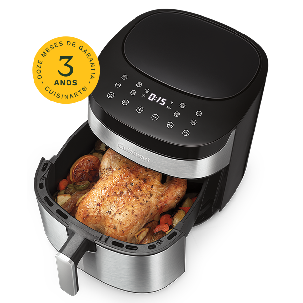

8 preparos
pré-programados
Aviso para virar
os alimentos
7,2 L de
capacidade total
Faixa temperatura
de 40°C a 220°C
Prepare desde lanches simples até refeições elaboradas, com a facilidade que você sempre pediu e de forma naturalmente mais saudável.

Adicione frutas, caldas, castanhas e pedaços de chocolate enquanto prepara. A abertura da tampa permite personalizar cada receita.

Escolha a temperatura desde os 40°C até os 220°C, que dá aquela potência extra para assar e dourar rapidinho. Mais liberdade para explorar diversas receitas!

Escolha a temperatura desde os 40°C até os 220°C, que dá aquela potência extra para assar e dourar rapidinho. Mais liberdade para explorar diversas receitas!


A base do cesto em vórtice distribui o ar de forma mais eficiente, deixando as frituras mais crocantes e assados mais uniformes.

Seu design e o acabamento em aço inox deixam a sua cozinha ainda mais bonita.
